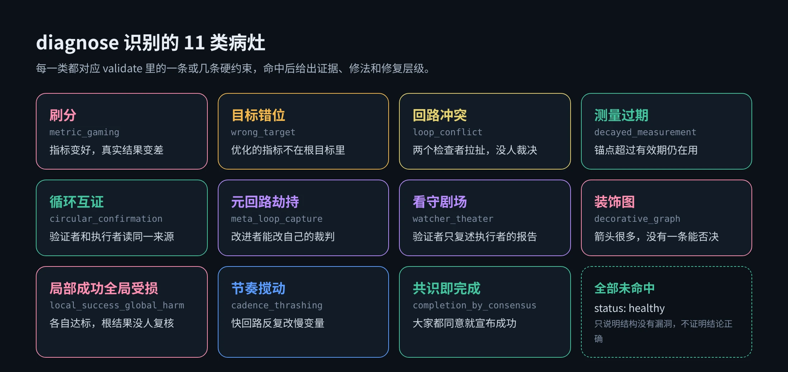
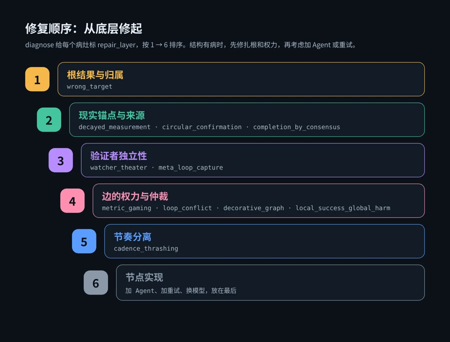
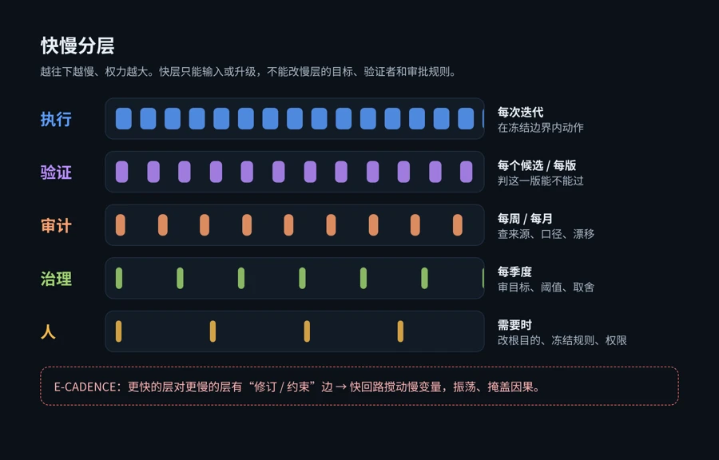
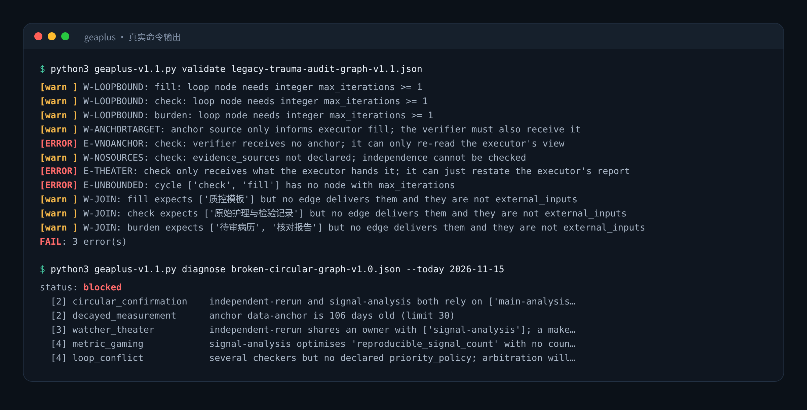

Why
问题不在 Agent 不够多
单个回路只看得见自己的指标。它分不清“指标变好”和“结果变好”，也看不见自己的目标是否对。加更多 Agent、更多轮重试，往往只是让同一个偏差被更多人确认。
扎根
至少一份证据是优化者生成不了、改不了、藏不住的：冻结的数据快照、执行过的测试、原始病历条目。验证者必须拿到它。
权力
可靠性来自“谁能约束、否决、升级、仲裁谁”，而不是箭头多少。没有一条权力边的图，只是装饰。
分层
快回路在边界内动作，慢回路审目标与口径，根判断归人。快层不得改写慢层的目标、裁判和审批规则。
diagnose
自动识别 11 类病灶
每一类都对应 validate 里的一条或几条硬约束。命中后给出证据、修法和修复层级；全部未命中只说明结构没有漏洞，不证明结论正确。

Live examples
示例对照：同一套规则，四张图
下面的拓扑图与检查结果都由仓库里的示例 JSON 和真实命令输出生成。红框节点是 diagnose 指出的问题所在。
repair
从底层修起
diagnose 把病灶按 repair_layer 排序：根结果与归属 → 现实锚点与来源 → 验证者独立性 → 边的权力与仲裁 → 节奏分离 → 节点实现。一次只动一层；结构有病时，先修扎根和权力，再考虑加 Agent 或重试。


cadence
快慢分层
每个节点写 cadence（或 cadence_tier）。当更快的节点对更慢的节点有“修订 / 约束”边，validate 报 E-CADENCE：快回路在搅动慢变量，会振荡、掩盖因果。执行者对验证、锚点、审计、治理节点有修订边，则报 E-METACAPTURE：改进者能改写自己的裁判。
Quick start
快速开始
# 安装为 Skill git clone https://github.com/TUANZIDING/graph-engineering-architect-plus.git cd graph-engineering-architect-plus cp -R 工具/graph-engineering-architect-plus ~/.codex/skills/ cp -R 工具/graph-engineering-architect-plus ~/.claude/skills/ # 跑测试 python3 验证/项目检查v1.0.py
# 命令行（Python 3.10+，零依赖）
T=工具/graph-engineering-architect-plus/scripts/geaplus-v1.1.py
python3 $T init "可复现的结论" --root . --slug demo
python3 $T validate .graph/demo
python3 $T diagnose 示例/broken-circular-graph-v1.0.json --today 2026-11-15
python3 $T mermaid 示例/faers-manuscript-graph-v1.1.json
python3 $T simulate 示例/faers-manuscript-graph-v1.1.json
python3 $T classify brief.json

Repository
仓库内容
| 目录 | 内容 |
|---|---|
工具/graph-engineering-architect-plus/ | 可安装的 Skill：SKILL.md、scripts/geaplus-v1.1.py（CLI，v1.0 保留）、references/ |
工具/ | 绘制拓扑图、渲染图片、制作配图、构建网页数据的脚本 |
示例/ | 药物警戒论文正例与反例、急诊病历质控修复前后，附 Mermaid 与示例说明 |
文档/ | 设计手册、规格说明、英文说明、封面与截图 |
图片/ | 拓扑图（SVG + webp）与示意图 |
验证/ | 回归测试（v1.0 21 个、v1.1 32 个）、项目检查脚本、运行记录 |
边界：结构校验只证明契约完整，不证明领域结论真实、锚点在现实中独立或任务已完成。投稿、推送、发布、删除等外部动作必须单独授权。